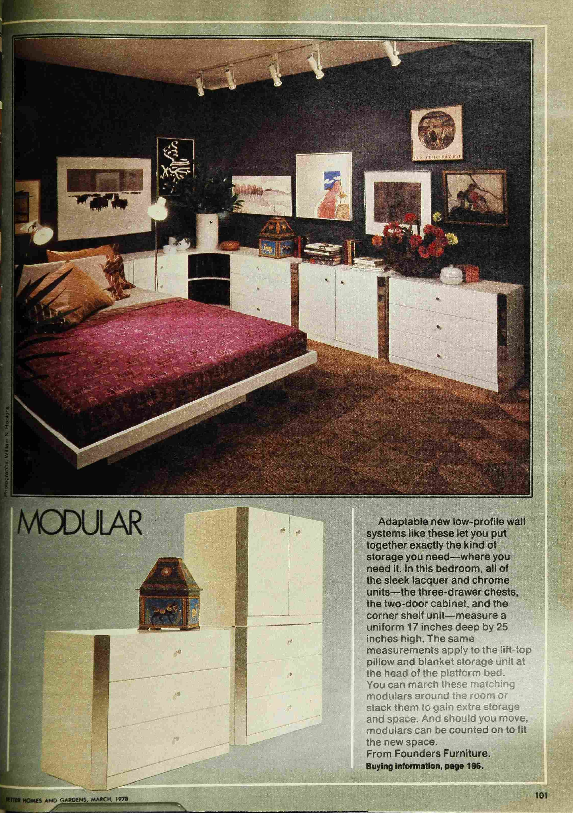

Overview
This project explores how 1970s interior design images from magazines can be organized using structured descriptive categories. Rather than focusing only on visuals, the project analyzes how design is described through language.
Data Collection
- Architectural Digest
- Better Homes and Gardens
Each image represents a room or interior space. The goal is to organize and describe them in a consistent, searchable way.
Archive Preview

Living Room
Green, wood, modern

Kitchen
Orange laminate, vinyl

Bedroom
Beige, fabric, soft textures
Ontology
Room Type
Living room, kitchen, bedroom, bathroom
Colors
Red, orange, yellow, green, earth tones
Style
Modern, rustic, minimalist, vintage
Materials
Wood, marble, glass, metal

Furniture
Table, couch, bed, chair
Data Structure
<mag>
<ptr target="image1.jpg"/>
<roomType>living room</roomType>
<colors>green, beige</colors>
<style>modern</style>
<materials>wood, fabric</materials>
</mag>
Future Development
The archive is treated as a living system that continues to evolve through research, expansion, and structural refinement. This section outlines the ongoing directions that guide its development.

Ongoing Research
Continued study of 1970s magazines and design materials helps refine accuracy and deepen understanding of terminology, style, and historical context.

Archive Expansion
The archive grows through the addition of new interiors, categorized examples, and visual documentation drawn from magazines and historical sources.
System Evolution
The website continues to develop as a structured digital archive, improving navigation, layout systems, and interactive presentation of data.
Sources
This archive is built from a combination of digital magazine archives, physical design references, and icon assets used for ontology classification and visual structure.
Icon Credits (Ontology System)
Icons used in the ontology system are sourced from Flaticon and attributed to their respective creators.
- Colors: Color icons created by See Icons — Flaticon source
- Flooring: Floor icons created by Freepik — Flaticon source
- Furniture: Home furniture icons created by Graphix's Art — Flaticon source
- Materials: Material icons created by Three Musketeers — Flaticon source
- Room Type: Paint brush icons created by Freepik — Flaticon source
- Ongoing Research: Document icons created by Freepik — Flaticon source
- Archive Expansion: Book icons created by mikan933 — Flaticon source
- System Evolution: Prototype icons created by wanicon — Flaticon source
Magazine & Archive Sources
- Better Homes & Gardens Archive (digital collection, accessed via https://archive.bhg.com/ ) — used for visual and textual reference of 1970s domestic interiors and design language.
- Architectural Digest — reference material from physical magazine issues used for the study of interior design composition, spatial layout, and material usage in domestic environments.